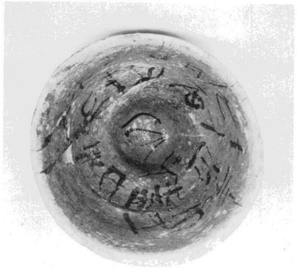
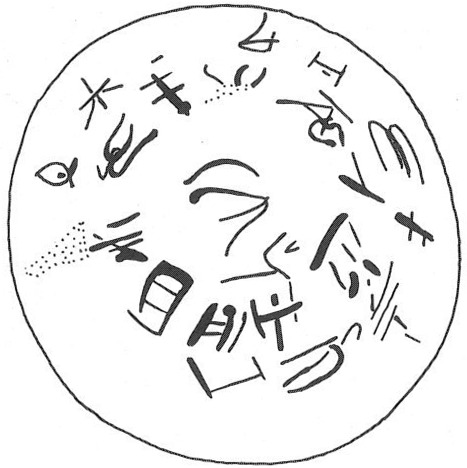

-
KNZc6
Names
Aliases for the inscription.
KNZc6, KN Zc 6
Support
Type of Object.
Inked inscription
Location
Site where object was found.
Knossos
Findspot
Location at Site.
Unavailable


# "Row Index", "Line Index", "Word Index", "Syllabogram", "Status of Reading"
# R L W I S
# 1 0 1 PA certain
1 1 0 *34 none
1 1 0 TI none
1 1 0 RI none
1 1 0 A none
1 1 0 DI none
1 1 0 DA none
2 1 0 KI none
3 1 0 TI none
4 1 0 PA none
5 1 0 KU none
5 1 1 *900 none
6 2 2 NI none
6 2 2 JA none
6 2 2 NU none
6 2 3 *900 none
7 3 4 JU none
7 3 4 KU none
7 3 4 NA none
7 3 4 PA none
8 3 4 KU none
9 3 4 NU none
10 3 4 U none
11 3 4 I none
12 3 4 ZU none
12 3 5 *900 none
Scribe
Writer of Inscription.
Unavailable
Context
Approximate Date of Inscription.
Unavailable
Dimensions
Height x Length x Thickness.
Catalogue
Museum Reference Number.
Readings
Linear A Transcription
A Linear A transcription with words parsed separately.
Line breaks match the inscription.
𐘟𐘠𐘭𐘇𐘆𐘀
𐘸
𐘠
𐘂
𐙂𐄁
𐘝𐘱𐘯𐄁
𐘶𐙂𐘅𐘂
𐙂
𐘯
𐘉
𐘚
𐙀𐄁
ASCII Transcription
An ASCII transcription with words parsed separately.
Line breaks match the inscription.
*34TIRIADIDA
KI
TI
PA
KU*900
NIJANU*900
JUKUNAPA
KU
NU
U
I
ZU*900
Linear A Tabulation
A Linear A transcription with words parsed separately.
Line breaks are logical, e.g. to represent a list.
𐘟𐘠𐘭𐘇𐘆𐘀𐘸𐘠𐘂𐙂𐄁
𐘝𐘱𐘯𐄁
𐘶𐙂𐘅𐘂𐙂𐘯𐘉𐘚𐙀𐄁
ASCII Tabulation
An ASCII transcription with words parsed separately.
Line breaks are logical, e.g. to represent a list.
*34TIRIADIDAKITIPAKU*900
NIJANU*900
JUKUNAPAKUNUUIZU*900
Commentary
KN Zc 6
(HM 2630) (GORILA IV: 118-121), painted
inscription in 3 circular registers in the interior of a tall conical
cup,
the top of the signs oriented toward the bottom of the cup (Basement of
Monolithic Pillars, MM III?; PM I 588 fig. 431a, 613-16, figs. 450-51)
*34-TI-
RI
A-DI-DA-KI-TI-PA-KU •
NI
-JA-NU •
JU-KU-NA-PA-KU-
NU
-
U
[-•]-I-ZU •
GORILA draws but omits (from its transcription) the 4th sign from the end; if this is U, it is reversed. JGY: A-DI-DA-KI-TI-PA-KU looks like a muddled version of
A-DI-KI-TE, and the succession of syllabus JU-KU- etc. sound like
gibberish. See the note to the next cup.
Commentary © John Younger
References
papers/GORILA-Vol4.pdf#page=162